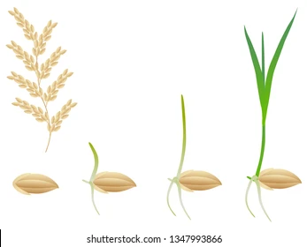

Crop Growth Stages
Stage Title
Stage description goes here.
Duration goes here.

Recommended Fertilizers
Fertilizer Guide
Exact Matches
All Fertilizers
Scan Fertilizer
Scan Fertilizer Label
Click to scan fertilizer label
or upload an image